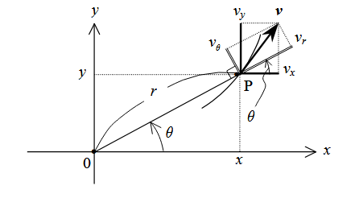
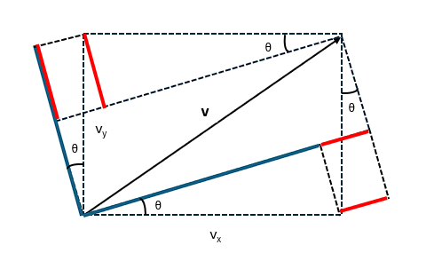
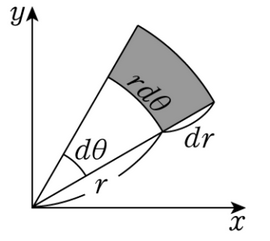
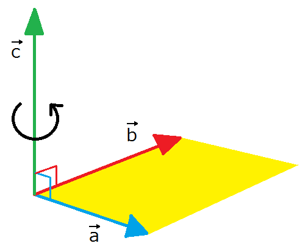
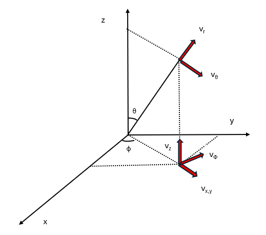

ここからは、どのように回転運動を扱うかを述べていくことにする。そもそも回転というのは、ある一点を軸にその周囲を運動することを言う。その様子を記述するとき、ちょうど二体問題で扱った極座標が便利であるため、通常の運動方程式
mdt2d2x=Fx、mdt2d2y=Fy
を以下のように置き換えてみることにする。
x=rcosθ、y=rsinθ
まず、各方向の速度を置き換えると
vx=dtdx=dtdrcosθ−rdtdθsinθ
vy=dtdy=dtdrsinθ+rdtdθcosθ
となるが、ここで極座標での速度 vr,vθ は以下の図のように r,θ が増加する方向を正とした成分で表されることから
vr=vxcosθ+vysinθ、vθ=vycosθ−vxsinθ


である（vr に関しては赤線と青線の長さを足したもの、vθ については 青線から赤線を引いた長さになっている）ことを踏まえ、この左辺に先ほど求めた速度を代入すると以下の式が求められる。
vr=dtdr、vθ=rdtdθ
この形については、以下のように各方向の微小変化を見ることで正しいものと確認できる。

次に、加速度についても同様に
ax=dt2d2x=dt2d2rcosθ−2dtdrdtdθsinθ−rdt2d2θsinθ−r(dtdθ)2cosθ
ay=dt2d2y=dt2d2rsinθ+2dtdrdtdθcosθ+rdt2d2θcosθ−r(dtdθ)2sinθ
と置き換えたうえで、極座標での加速度 ar,aθ との関係が
ar=axcosθ+aysinθ、aθ=aycosθ−axsinθ
であることから、求めた加速度を代入してみると
ar=dt2d2r−r(dtdθ)2、aθ=2dtdrdtdθ+rdt2d2θ
となるが、一方で力についても加速度と同様に
Fr=Fxcosθ+Fysinθ、Fθ=Fycosθ−Fxsinθ
が成り立つことから、極座標での運動方程式は以下の通りになっていることが分かる。
m[dt2d2r−r(dtdθ)2]=Fr、m(2dtdrdtdθ+rdt2d2θ)=Fθ
これらの式を詳しく見ていくと、動径方向については
mdt2d2r=Fr+fr,θ、fr,θ=mr(dtdθ)2
というように、通常の運動方程式にあたかも力 fr,θ （遠心力）が遠ざかる方向に加わった形になっている。次に、角度方向については二体問題と同じように r をかけて整理すると
dtdL=rFθ、L=mr2dtdθ
というように L を用いて書ける。ここで回転する条件を考えたとき、角度方向に動いていれば回転することから角度の時間微分（角速度）が常に0でないものと思われる。そこで、角速度を ω として先ほどの式を表記し直すと
fr,θ=mrω2、L=mr2ω、ω=dtdθ
となるが、このうち L は従来の運動量が質量（慣性質量）と速度の掛け算であったことを踏まえ
L=Iω、I=mr2
というように I（慣性モーメント）を用いると、L は角度方向の運動量（角運動量）として扱うことができる。すると、rFθ は回転運動を変化させる量として N（モーメント）としてみなすことができ、
dtdL=N、L=Iω、N=rFθ
というように回転の運動方程式として記述される。ここで、N について詳しく見ていくために直交座標系で書くと
N=rFθ=rcosθFy−rsinθFx=xFy−yFx
となるが、これは外積と呼ばれる関係になっていることが予想される。例えば、ベクトル a,b が以下の図のようになっており
a=(ax,ay,0)、b=(bx,by,0)
とすると、外積 c は以下の形で表される。
c=a×b=(0,0,axby−aybx)

試しに a=r,b=F として外積をとると、以下の通り z 成分が先ほどの N と一致していることが分かる。
r×F=(0,0,xFy−yFx)=(0,0,N)
そのため、回転方向については z 成分に関する方程式になっていると考えられる。そこで、運動方程式
mdtdv=F
に外積をとることで一般的に回転の運動方程式がどのようになるかを見てみることにする。まず、両辺に r と外積をとると
m(r×dtdv)=N、N=r×F
というように右辺がモーメント N となるので、左辺を変形してみると
(r×dtdv)=dtd(r×v)−(v×v)=dtd(r×v)
となるので以下の通りになる。
mdtd(r×v)=N
そして、左辺を極座標で整理することで
m(r×v)=(0,0,mxdtdy−mydtdx)=Iω、ω=(0,0,ω)
というように角運動量 L の z 成分と同じ形になっていることが分かる。そのため、最終的に回転の運動方程式は以下の通りになる。
mdt2d2r=Fr+fr,θ、fr,θ=mrω2
dtdL=N、L=m(r×v)=Iω、N=r×F
ここまでは話を簡単にするため2次元を扱ってきたが、同様に3次元においても成立するかを見てみる。まず、直交座標系 (x,y,z) と極座標 (r,θ,ϕ) に置き換えると
x=rsinθcosϕ、y=rsinθsinϕ、z=rcosθ
であるため、まず各成分の速度を求めると
vx=dtdx=dtdrsinθcosϕ+rdtdθcosθcosϕ−rsinθdtdϕsinϕ
vy=dtdy=dtdrsinθsinϕ+rdtdθcosθsinϕ+rsinθdtdϕcosϕ
vz=dtdz=dtdrcosθ−rdtdθsinθ
となる。一方で極座標での速度 vr,vθ,vϕ は二次元のときの関係式を利用すると、まず
vx,y=vxcosϕ+vysinϕ、vϕ=vycosϕ−vxsinϕ
というように x,y 平面上の動径 rx,y 方向および角度 ϕ 方向の速度になり、動径 r 方向と角度 ϕ 方向の速度も
vr=vzcosθ+vx,ysinθ、vθ=vx,ycosθ−vzsinθ

となることから、求めた速度を代入してみると
vx,y=dtdrsinθ+rdtdθcosθ、vϕ=rsinθdtdϕ、vr=dtdr、vθ=rdtdθ
このうち、速度 vr,vθ,vϕ については以下のように微小変化を見ることで正しいことが分かる。

そして、加速度についても
ax=dt2d2x=dtd(dtdrsinθcosϕ+rdtdθcosθcosϕ−rdtdϕsinθsinϕ)=dt2d2rsinθcosϕ+2dtdrdtdθcosθcosϕ−2dtdrdtdϕsinθsinϕ+rdt2d2θcosθcosϕ−r(dtdθ)2sinθcosϕ−2rdtdθdtdϕcosθsinϕ−rdt2d2ϕsinθsinϕ−r(dtdϕ)2sinθcosϕ
ay=dt2d2y=dtd(dtdrsinθsinϕ+rdtdθcosθsinϕ+rdtdϕsinθcosϕ)=dt2d2rsinθsinϕ+2dtdrdtdθcosθsinϕ+2dtdrdtdϕsinθcosϕ+rdt2d2θcosθsinϕ−r(dtdθ)2sinθsinϕ+2rdtdθdtdϕcosθcosϕ+rdt2d2ϕsinθcosϕ−r(dtdϕ)2sinθsinϕ
az=dt2d2z=dtd(dtdrcosθ−rdtdθsinθ)=dt2d2rcosθ−2dtdrdtdθsinθ−rdt2d2θsinθ−r(dtdθ)2cosθ
となるが、先ほどの速度と同じように極座標において
ax,y=axcosϕ+aysinϕ、aϕ=aycosϕ−axsinϕ
ar=azcosθ+ax,ysinθ、aθ=ax,ycosθ−azsinθ
が成り立つものとして代入してみると
ax,y=dt2d2rsinθ+2dtdrdtdθcosθ+rdt2d2θcosθ−r(dtdθ)2sinθ−r(dtdϕ)2sinθ
aϕ=2dtdrdtdϕsinθ+2rdtdθdtdϕcosθ+rdt2d2ϕsinθ
ar=dt2d2r−r(dtdθ)2−r(dtdϕ)2sin2θ
aθ=rdt2d2θ+2dtdrdtdθ−r(dtdϕ)2sinθcosθ
となる。そのため、極座標での各成分の運動方程式は
vr=(dtdr)、ωθ=(dtdθ)、ωϕ=(dtdϕ)
と置くことで、以下の通りになる。
mdtdvr−mrωθ2−mrωϕ2sin2θ=(Fxcosϕ+Fysinϕ)sinθ+Fzcosθ
mrdtdωθ+2mvrωθ−mrωϕ2sinθcosθ=(Fxcosϕ+Fysinϕ)cosθ−Fzsinθ
mrdtdωϕsinθ+2mrωθωϕcosθ+2mvrωϕsinθ=−Fxsinϕ+Fycosϕ
ここで、2次元のときの力の関係式を踏まえると
Fx,y=Fxcosϕ+Fysinϕ、Fϕ=Fycosϕ−Fxsinϕ
というように x,y 平面上の動径 rx,y 方向および角度 ϕ 方向の力になり、動径 r 方向と角度 θ 方向の力も
Fr=Fzcosθ+Fx,ysinθ、Fθ=Fx,ycosθ−Fzsinθ
という関係にあることから、最終的に以下の形になる。
mdtdvr−mrωθ2−mrωϕ2sin2θ=Fr
mrdtdωθ+2mvrωθ−mrωϕ2sinθcosθ=Fθ
mrdtdωϕsinθ+2mrωθωϕcosθ+2mvrωϕsinθ=Fϕ
ここで、動径方向の運動方程式を整理すると
mdtdvr−(mrωθ2+mrωϕ2sin2θ)=Fr
となるが、括弧内の部分は遠心力となっている。実際、第１項目については、x,y と z 平面での遠心力となるため、
fr,θ=mrωθ2
となる。第2項目については、x,y 平面上での遠心力が
fx,y=m(rsinθ)ωϕ2
であり、先ほどの動径方向の関係式を利用すると
fr,ϕ=Fzcosθ+Fx,ysinθ=0+fx,ysinθ=mrωϕ2sin2θ
というように第2項目の力になっていることが分かる。そのため、動径方向については以下のようになると思われる。
mdtdvr=Fr+(fr,θ+fr,ϕ)、fr,θ=mrωθ2、fr,ϕ=[m(rsinθ)ωϕ2]sinθ
このことからも伺えるように θ の方向には r 、ϕ の方向には rsinθ の位置で回転することから
Lθ=mr2ωθ、Lϕ=m(rsinθ)2ωϕ
と角運動量をおき、これらを微分してみると θ,ϕ の運動方程式も利用することで
dtdLθ=r(mrdtdωθ+2mvrωθ)=r(Fθ+mrωϕ2sinθcosθ)
dtdLϕ=rsinθ(mrdtdωϕsinθ+2mrωθωϕcosθ+2mvrωϕsinθ)=rsinθFϕ
が得られる。ここで、Lθ に関する式の第二項目については、ϕ 方向の回転に対する遠心力の θ 方向の成分であり、実際
fθ,ϕ=Fx,ycosθ−Fzsinθ=m(rsinθ)ωϕ2cosθ+0=mrωϕ2sinθcosθ
となることからも分かる。以上のことから、以下の形にまとめられることが分かる。
mdtdvr=Fr+(fr,θ+fr,ϕ)、fr,θ=mrωθ2、fr,ϕ=[m(rsinθ)ωϕ2]sinθ
dtdLθ=r(Fθ+fθ,ϕ)、Lθ=mr2ωθ、fθ,ϕ=[m(rsinθ)ωϕ2]cosθ
dtdLϕ=rsinθFϕ、Lϕ=m(rsinθ)2ωϕ
ここで Lθ と Lϕ の関係式が
dtdL=N、L=(r×v)、N=r×F
に対応しているか見てみよう。まず、角運動量が直交座標系において
Lx=m(yvz−zvy)、Ly=m(zvx−xvz)、Lz=m(xvy−yvx)
となるが、各速度が極座標により
vx=vrsinθcosϕ+rωθcosθcosϕ−rωϕsinθsinϕ
vy=vrsinθsinϕ+rωθcosθsinϕ+rωϕsinθcosϕ
vz=vrcosθ−rωθsinθ
と書けるため、以下の通りになる。
Lx=m(yvz−zvy)=−mr2(ωθsinϕ+ωϕsinθcosθcosϕ)
Ly=m(zvx−xvz)=mr2(ωθcosϕ−ωϕsinθcosθsinϕ)
Lz=m(xvy−yvx)=mr2ωϕsin2θ
また、x,y 平面上において動径 rx,y 方向および rx,y に垂直な方向（角度 θ に垂直な方向）の角運動量が
Lx,y=Lxcosϕ+Lysinϕ、Lθ=Lycosϕ−Lxsinϕ
であり、動径 r 方向と r に垂直な方向についても
Lr=Lzcosθ+Lx,ysinθ、Lr⊥=Lx,ycosθ−Lzsinθ
であることから、これらに代入すると
Lx,y=−mr2ωϕsinθcosθ、Lθ=mr2ωθ、Lr=0、Lr⊥=−mr2ωϕsinθ

となる。このうち、Lθ は先ほど運動方程式から求めた形と一致していることが分かる。Lϕ については、形を見比べると Lϕ=Lz であるため、確認のため時間微分をとり
dtdLϕ=dtdLz=xFy−yFx
とすると、極座標において
x=rsinθcosϕ、y=rsinθsinϕ、Fϕ=Fycosϕ−Fxsinϕ
となることを踏まえて整理すると
dtdLϕ=rsinθ(Fycosϕ−Fxsinϕ)=rsinθFϕ
となる。そのため、3次元においても回転の運動方程式
dtdL=N、L=(r×v)、N=r×F
が成り立つことが分かる。あるいは角速度 ω に関して角運動量と同じように
ωx,y=ωxcosϕ+ωysinϕ、ωθ=ωycosϕ−ωxsinϕ
ωr=ωzcosθ+ωx,ysinθ、ωr⊥=ωx,ycosθ−ωzsinθ
とすると、ωθ に関して
Lθ=mr2ωθ=mr2ωycosϕ−mr2ωxsinϕ
角運動量を L=Iω と
ωx=−ωθsinϕ−ωϕsinθcosθcosϕ
ωy=ωθcosϕ−ωϕsinθsinθsinϕ
ωz=ωϕsin2θ
となることが予想される。このうち一つ目と二つ目を整理すると
ωθ=−ωxsinϕ+ωycosϕ
−ωϕsinθcosθ=ωxcosϕ+ωysinϕ
となるが、これらと力の関係
Fx,y=Fxcosϕ+Fysinϕ、Fϕ=Fycosϕ−Fxsinϕ
を見比べることで、以下のように対応しているものと思われる。
−ωϕsinθcosθ=ωxcosϕ+ωysinϕ↔Fx,y=Fxcosϕ+Fysinϕ
ωθ=−ωxsinϕ+ωycosϕ↔Fϕ=Fycosϕ−Fxsinϕ
そこで、以下のように書けるものとしてみる。
ωx,y=ωxcosϕ+ωysinϕ、ωx,y=−ωϕsinθcosθ
ωθ=−ωxsinϕ+ωycosϕ
そうすると、同じように力の関係
Fr=Fzcosθ+Fx,ysinθ、Fθ=Fx,ycosθ−Fzsinθ
を利用することで、動径方向およびそれに直交する方向の角運動量を ωr,ωr⊥ は
Fr=Fzcosθ+Fx,ysinθ↔ωr=ωzcosθ+ωx,ysinθ
Fθ=Fx,ycosθ−Fzsinθ↔ωr⊥=ωx,ycosθ−ωzsinθ
となり、これらに ωx,y,ωz を代入することで
ωr=(ωϕsin2θ)cosθ+(−ωϕsinθcosθ)sinθ=0
ωr⊥=(−ωϕsinθcosθ)cosθ−(ωϕsin2θ)sinθ=−ωϕsinθ
が得られる。ここで動径方向については回転成分はないため0となる。一方で垂直方向については ωθ が常に x,y 平面に沿った方向を向くため z 方向には ωϕ のものしか影響しないためこのような形になる。